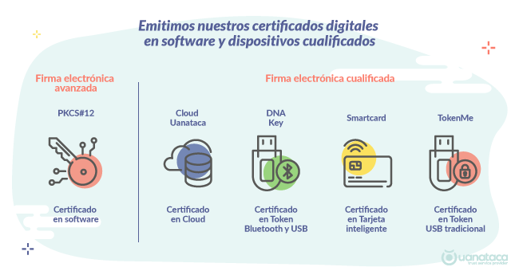

Introducción de Certificados Digitales.
Los certificados digitales son documentos electrónicos que verifican la identidad de una entidad en línea, como una persona, una empresa o un sitio web. Estos certificados son emitidos por Autoridades de Certificación (CA) de confianza. Algunos puntos clave sobre los certificados digitales:
- Emisor: Una entidad de confianza, como una CA, emite los certificados. Podríamos decir que es la entidad que se asegura la autenticidad del titular, además esta debe comprobarla previamente.
-
Contenido del Certificado:
Titular: El certificado contiene información sobre el titular, que puede ser una persona, una empresa o incluso un sitio web. Esta información incluye el nombre, la dirección de correo electrónico y otros detalles relevantes.
Clave Pública: El certificado también incluye la clave pública del titular. La clave pública se utiliza para cifrar datos y verificar firmas digitales.
Firma Digital: La CA agrega su firma digital al certificado, lo que garantiza que el certificado no ha sido alterado y que proviene de una fuente confiable. -
Usos de los Certificados:
Autenticación: Los certificados se utilizan para verificar la identidad del titular. Por ejemplo, cuando visitas un sitio web seguro (con “https”), el navegador verifica el certificado del servidor para asegurarse de que estás realmente conectado al sitio correcto.
Cifrado: Los certificados se emplean para cifrar datos en tránsito. Por ejemplo, cuando envías información confidencial a través de un formulario en línea, el certificado asegura que los datos estén protegidos.
Firma Electrónica: Los certificados permiten la firma electrónica de documentos. Cuando firmas digitalmente un contrato o un mensaje, estás utilizando un certificado para garantizar la integridad y autenticidad de la firma.
Además al tratarse de un documento digital, es necesario almacenar su información en algún medio electrónico. Para ello, el certificado digital puede instalarse en el navegador, guardarse en una memoria USB, en un ordenador o en el disco duro. A este tipo de certificado se le conoce como certificado en software.
Además, el certificado digital también puede almacenarse en un dispositivo cualificado de firma, como:
